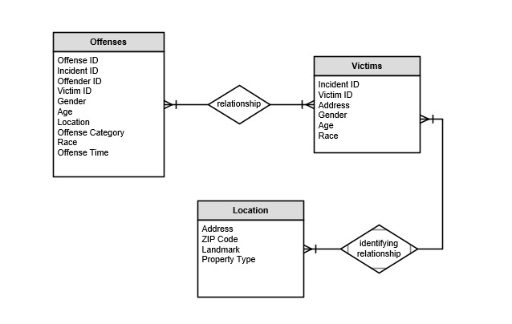

A graduate student currently pursuing Business Analytics & Information Systems at USF. Further, worked using Oracle SQL Developer in Tata Consultancy Services during the period 2018-2021.
Worked on the home page and Search Page
A graduate student in Business Analytics & Information Systems at USF, Amrut has worked as Systems Engineer for 2 plus years with expertise in Data Warehouse Technologies and ETL Testing at Infosys.
Worked on Statistics Page and created visualizations using Tableau
A graduate student in Business Analytics & Information Systems at USF, Anil has worked as an Analytics Conusltant with expertise in building and delivering business solutions using various statistical techniques. He is passionate about bridging the gap between technology and businesses while enhancing the decision-making ability of the business stake holders.
Worked on About Us Page along with datamodeling using Visio
References
Data has been fetched from API.data.gov
The Dataset includes information collected by the Federal Bureau of Investigation during the year 2020
Kindly refer to our source code at GitHub GitHub
Data Model
